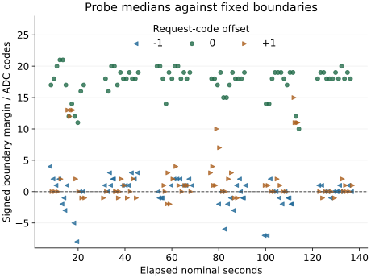

Question and rationale
The preceding return recognized all 504 unperturbed medians. Of 144 one-code perturbations, 34 were rejected and none received a wrong identity; 47 accepted medians lay exactly on a boundary. However, each round primarily used one perturbation direction, and nominal probes occurred only in rounds 0 and 5.
This investigation asks whether the boundary rejections recur when each state receives nominal, negative and positive probes within the same round. Balancing their positions and A/B histories reduces the earlier association between offset and elapsed operation. It does not select a wider classifier or assume that rejections represent uncontrolled noise.
The primary comparison remains the correctly recognized nominal B median against its immediately following perturbed or zero-offset B median. Record all correct, wrong, rejected and unavailable outcomes, their state and round, and signed boundary margins.
Method
One planned boot contains six rounds and 3888 readings. Each round begins with the same 216 reference readings: 36 at each of six nominal control codes, 90, 93, 96, 99, 102 and 105. Reference order rotates with the round. The unchanged renewed baseline and one-third-gap candidate derive their intervals from references alone; validation readings cannot alter them.
The remaining 432 readings per round form 36 twelve-reading trials. Each trial retains the four three-reading stages: prime A with triggering, request B without triggering, trigger at B, then probe B at the selected offset. All 36 ordered A/B pairs occur once per round. There are 216 medians per stage over the boot.
Retain zero added acquisition wait, the 1000 microsecond pre-ADC settling interval, guard 2, operating checks, bounded transactions, restoration and ordered recording. Added-wait zero does not remove transport, settling or instruction overhead.
Balanced probe order
For trial position t = 0–5 within a state group and round r = 0–5, compute the nominal offset as ((t + 2r) modulo 3) − 1, then reverse its sign in rounds 3–5. The first three offsets shown below repeat once to cover all six trial positions.
| Round | First three trials |
|---|---|
| 0 | −1, 0, +1 |
| 1 | +1, −1, 0 |
| 2 | 0, +1, −1 |
| 3 | +1, 0, −1 |
| 4 | −1, +1, 0 |
| 5 | 0, −1, +1 |
Each interior state has two probes per offset in every round, twelve per offset over the boot. Every fixed trial position and every A/B pair receives each nominal offset twice over six rounds. All six permutations occur.
At state 0, redirect −1 to +1; at state 5, redirect +1 to −1. The two outer states therefore each have two nominal and four inward probes per round. All requests remain within 90–105. Across the boot there are 72 effective probes at each of −1, 0 and +1, matching the preceding experiment's total coverage.
The sequence is deterministic rather than randomized. Each round contains all effective offsets, but state groups and immediate history still have a prescribed order. Outer states do not supply outward observations. A request-code increment is not an independently calibrated voltage increment.
Assessment fixed before acquisition
Preserve the preceding assessment rules. Require matching preparation identity, unchanged boot payload, a complete valid journal, the exact declared schedule and control readbacks, successful operating checks and restorations. Reconstruct both native classifiers from their recorded reference inputs and verify all ordered ADC observations against whole-call endpoints.
- Trigger provenance: all 216 omitted triples retain the immediately preceding last A result; all 180 changed-state trials update numerically at the first triggered B read. Keep the 36 self-transitions separate. Require the declared 0 → 1 → 0 triggered and 0 → 0 → 0 omitted status signatures, with agreeing result pairs.
- Nominal recognition: all 216 prime-A and 216 triggered-B medians are correct. Report the 72 nominal probe medians separately.
- Boundary robustness: all 72 probe medians at each effective offset are correct. Any wrong, rejected or unavailable outcome prevents this complete-recognition criterion from passing.
The combined criterion requires all three results and diagnostic integrity. Retain missing observations in the scheduled denominators. A failed calibration makes recognition unavailable; do not widen its intervals, relabel outcomes or fit validation data after return. Omitted-trigger classifications remain controls and cannot qualify fresh B samples.
For interpretation, tabulate outcomes by state, offset and round; report how many rounds contain a rejection in each state/offset condition. Compare each probe with the preceding nominal B median and its signed distance to the frozen interval. These descriptive comparisons do not add a new acceptance threshold or establish a causal temperature or noise model.
The preceding boot provides context, not a paired control for this boot's environment. Independent analog conversion freshness, voltage accuracy and exclusion of other device activity remain unqualified even if every criterion passes.
Implementation and recording
The existing SEIGRASM challenge dispatch gains a schedule selector. Selector 0 retains the round-associated schedule; selector 1 computes the balanced order. Both use the same timed acquisition, calibration, recognition and senary journal operations. Instructions are authored literal AArch64 opcodes; PC tools place those bytes and assess the returned evidence.
Configuration schema 13 identifies this schedule. The 64-word acquisition rows, six-word timing records, calibration and native decision records are unchanged. Configuration words 55–63 remain 648, 12, 4, 3, 1, 0, 1, 90, 3. Dispatch context holds the timed entry, first control 90 and selector 1. The independent reader reconstructs every request, mode, state and offset from the ordinal.
The full journal uses at most 32151 sectors within 32704 reservations. The same direct component transactions and operating guards remain in force. The existing EEPROM loader and initial hardware state remain apparatus dependencies, as described in Silicon access.
Decisions informed by the return
If rejections recur within the balanced rounds while nominal medians remain correct, report the measured state/side limits before proposing a new tolerance rule. Any later rule must be selected from separate reference evidence and tested against held-out nominal, perturbed and adjacent-state observations. Acceptance beyond the current bounds is not automatically an improvement if identities become ambiguous.
If those rejections disappear, the difference alone cannot identify its cause across boots; inspect reference intervals, request-to-observation differences and transition histories. If nominal recognition or the retention/update controls fail, resolve that failure before interpreting broader margins. Continue carrying acquisition provenance alongside identity in the subsequent Hyphos work.
Powered window
Use the same 26-minute powered session and established SD workflow. The preceding run reached final-section entry at 1402.880597 nominal seconds and returned a complete journal. This preparation keeps the reading and journal counts; the returned journal is complete.
Preparation
Preparation DEA54B7E7382 was installed for this run. The complete 64 MiB readback matches the prepared image; the preceding return was preserved before replacement. The physical return is assessed below; the preparation archive retains the frozen protocol.
All 269 supplied-device execution checks passed with unchanged source. The dispatch contains 78 authored instruction words; 33 other instruction regions are byte-identical to the preceding preparation. The archive preserves 102 validated source files, the protocol and exact image bytes.
Preparation manifest · Execution validation · Payload comparison · SD readback · Artifact hashes
Results
Nominal recognition and the retention/update controls passed. Boundary robustness did not: 36 of 144 one-code perturbations were rejected, with no wrong triggered-median identity. Rejections occurred in all six balanced rounds.
All 3888 readings were recovered. Prime-A and triggered-B medians were each 216/216 correct; all 72 zero-offset probes were correct. Together these give 504/504 unperturbed medians, matching the preceding boot's total. The narrower renewed baseline rejected two prime-A and two triggered-B medians; the candidate recognized all four.
| Condition | Correct / scheduled | Rejected |
|---|---|---|
| Prime A | 216 / 216 | 0 |
| Trigger B | 216 / 216 | 0 |
| Probe −1 | 48 / 72 | 24 |
| Probe 0 | 72 / 72 | 0 |
| Probe +1 | 60 / 72 | 12 |
Diagnostic integrity, trigger provenance and nominal recognition each met their declared criterion. The combined criterion was not met because boundary robustness failed. Of the perturbed probes, 108/144 were correct, compared with 110/144 in the preceding boot. These different schedules and separate boot conditions do not establish an improvement or deterioration in reliability.
State and boundary observations
Every probe followed a correctly recognized nominal B median. One-code decreases changed the measured median by −24 to −14 ADC codes relative to that preceding median; increases changed it by +13 to +23. Zero-offset differences ranged from −4 to +3. These are observed digital-code differences, not independently calibrated voltage increments.
| State | −1 | 0 | +1 |
|---|---|---|---|
| 0 | — | 12 / 12 | 22 / 24 |
| 1 | 7 / 12 | 12 / 12 | 11 / 12 |
| 2 | 10 / 12 | 12 / 12 | 8 / 12 |
| 3 | 9 / 12 | 12 / 12 | 11 / 12 |
| 4 | 10 / 12 | 12 / 12 | 8 / 12 |
| 5 | 12 / 24 | 12 / 12 | — |
Rejected probe medians lay 1–8 ADC codes outside their requested intervals: 21 were one code outside, eight were two codes outside, two were three, one was five, one was six, two were seven and one was eight. Another 41 perturbed medians were accepted exactly on a boundary. Zero-offset margins were 10–21 codes; negative-offset margins were −8 to +4 and positive-offset margins were −2 to +15.


Rounds 0–5 produced 7, 4, 5, 9, 8 and 3 rejections respectively. Each round contained 12 effective probes per offset. Rejections occurred in every tested state/perturbation-side condition at least once, distributed over 22 of the 60 state/side/round groups.
| State / offset | Rejected | Rounds containing rejection |
|---|---|---|
| 0 / +1 | 2 | 1, 2 (2/6) |
| 1 / −1 | 5 | 0, 3, 4 (3/6) |
| 1 / +1 | 1 | 2 (1/6) |
| 2 / −1 | 2 | 3 (1/6) |
| 2 / +1 | 4 | 0, 1, 5 (3/6) |
| 3 / −1 | 3 | 3, 4 (2/6) |
| 3 / +1 | 1 | 1 (1/6) |
| 4 / −1 | 2 | 4, 5 (2/6) |
| 4 / +1 | 4 | 1, 3, 5 (3/6) |
| 5 / −1 | 12 | 0, 2, 3, 4 (4/6) |
State 1's negative side illustrates the role of the reference-derived interval. In rounds 0 and 4 its lower half-width was 13 ADC codes, while its perturbed probe medians lay 18–21 codes below the reference centre. All four negative probes in those two rounds were rejected. This is an observed relation between reference bounds and requested perturbations; it does not identify temperature or another physical cause of reference variation.
Retention and triggered updates
All 216 omitted-trigger triples retained the immediately preceding last raw A result. The first triggered-B read changed numerically in all 180 changed-state trials; the 36 self-transitions were assessed separately. All 3240 triggered readings recorded 0 → 1 → 0 status; all 648 omitted readings recorded 0 → 0 → 0. Both result pairs agreed throughout.
Of the omitted triples, 215 were recognized as A and one was rejected. In trial 41 (zero-based), the prime-A readings at ordinals 924–926 were 2795, 2791 and 2816; their median 2795 was correctly recognized as state 0. After requesting state 4, ordinals 927–929 retained 2816. That value was three codes above state 0's frozen upper bound, 2813, so the omitted median was rejected. The subsequent triggered-B median was correctly recognized as state 4.
The retention criterion passed because the omitted values retained the last raw A result exactly. The distinction between that individual value and the preceding three-reading median explains why retained-value recognition was 215/216 while prime recognition was 216/216. State identity, aggregation and acquisition provenance remain separate observations. None independently timestamps an analog conversion.
Timing and completion
All 3888 whole-call intervals and 27216 internal ADC counter observations satisfy the declared ordering checks. All 7776 endpoint frequency observations report 54000000 Hz. Whole-call duration has a median of 34.916324 ms and a range of 33.104352–39.042944 ms.
Acquisition lasted 137.076152 nominal seconds; the ordered first-start to last-end span was 137.067680 seconds. Final-section entry occurred 1402.758061 seconds after trial entry, about 23 minutes 23 seconds. The complete persisted journal was recovered. Its final target readback is not established by that recovery.
Interpretation and next investigation
Boundary rejections recur with both perturbation directions represented in every round, so the previous offset/round association does not fully explain them. Nominal median recognition remains complete with zero added wait. The current evidence supports retaining that timing reference and the rejection regions while investigating the acceptance widths.
The perturbations deliberately move the request and observed value. A rejection is therefore evidence of the present recognition limit, not by itself evidence of uncontrolled noise or overlapping accepted states. The larger state-1 shortfalls and the variation in reference-derived bounds warrant examining the relation between reference sampling, state-specific response and retained separation.
A next investigation should characterize nominal and perturbed responses using a separate reference phase, then freeze candidate intervals before held-out nominal, perturbed and adjacent-state validation. Compare against the unchanged rule; reject a calibration if the resulting state intervals overlap. This would test whether reference-derived tolerances can cover the intended perturbations while preserving identity. This return must not be used to widen its own acceptance limits, and no replacement rule is yet qualified.
The omission controls again require retaining request, trigger and result provenance alongside recognized identity, including whether the value is an individual read or an aggregate. Independent analog conversion freshness, voltage accuracy and exclusion of other device activity remain unresolved. One apparatus and one balanced boot do not establish a general error rate.
Acquisition integrity
Two read-only acquisitions agree by SHA-256: e1ca2cbd7957baac5280b747834cf32bb519740947b29ed05bf770500133210d. Preparation identity matches and both boot files are unchanged. All 32151 journal records are valid and consecutive; 553 empty reservations remain unchanged. All six block restorations completed, and final restoration and pin release report success.
Seven sectors outside the journal differ from preparation; their writer and timing remain unidentified. No deviations were reported; external powered duration was not separately measured. The frozen protocol and preparation are preserved alongside the raw return, assessment sources and artifact hashes.